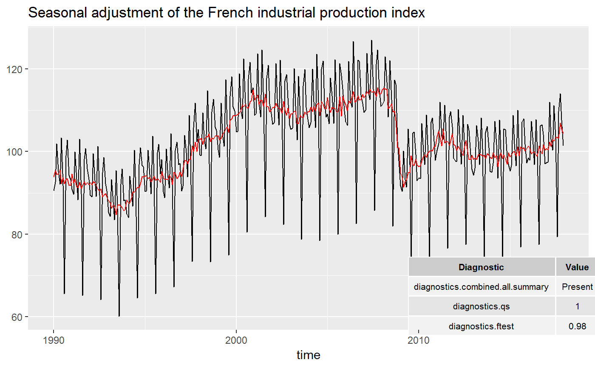
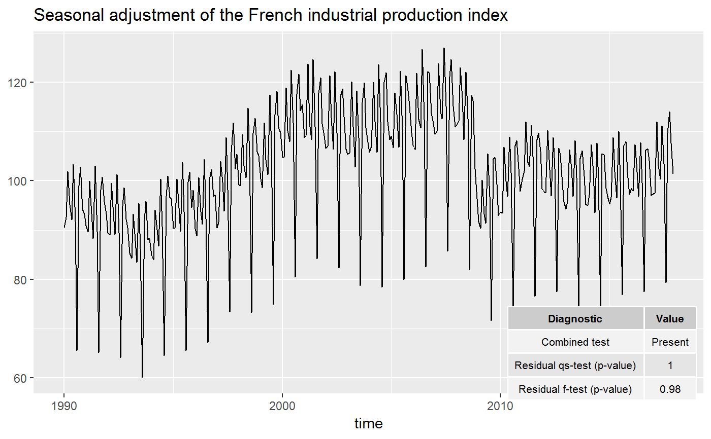
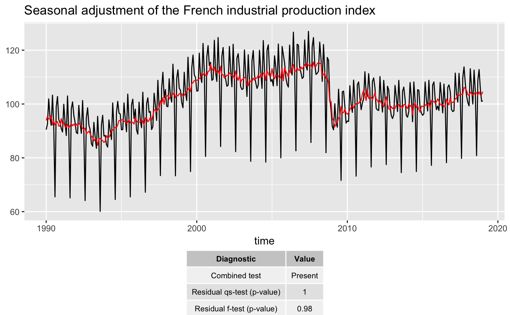

Adds a table of diagnostics to the plot
geom_diagnostics(mapping = NULL, data = NULL, position = "identity", ..., method = c("x13", "tramoseats"), spec = NULL, frequency = NULL, message = TRUE, diagnostics = NULL, digits = 2, xmin = -Inf, xmax = Inf, ymin = -Inf, ymax = Inf, table_theme = ttheme_default(), inherit.aes = TRUE)
| mapping | Set of aesthetic mappings created by aes() or
aes_(). If specified and |
|---|---|
| data | A |
| position | Position adjustment, either as a string, or the result of a call to a position adjustment function. |
| ... | Other arguments passed on to layer(). These are
often aesthetics, used to set an aesthetic to a fixed value, like
|
| method | the method used for the seasonal adjustment. |
| spec | the specification used for the seasonal adjustment. See x13() or tramoseats(). |
| frequency | the frequency of the time series. By default ( |
| message | a |
| diagnostics | vector of character containing the name of the diagnostics to plot. See user_defined_variables() for the available parameters. |
| digits | integer indicating the number of decimal places to be used for numeric diagnostics. By default |
| xmin, xmax | x location (in data coordinates) giving horizontal location of raster. |
| ymin, ymax | y location (in data coordinates) giving vertical location of raster. |
| table_theme | list of theme parameters for the table of diagnostics (see ttheme_default()). |
| inherit.aes | If |
data <- data.frame(x = as.numeric(time(ipi_c_eu)), y = as.numeric(ipi_c_eu[, "FR"])) p_ipi_fr <- ggplot(data = data, mapping = aes(x = x, y = y)) + geom_line() + labs(title = "Seasonal adjustment of the French industrial production index", x = "time", y = NULL) # To add of diagnostics with result of the X-11 combined test and the p-values # of the residual seasonality qs and f tests: diagnostics <- c("diagnostics.combined.all.summary", "diagnostics.qs", "diagnostics.ftest") p_ipi_fr + geom_diagnostics(diagnostics = diagnostics, ymin = 58, ymax = 72, xmin = 2010, table_theme = gridExtra::ttheme_default(base_size = 8), message = FALSE)# To customize the names of the diagnostics in the plot: diagnostics <- c(`Combined test` = "diagnostics.combined.all.summary", `Residual qs-test (p-value)` = "diagnostics.qs", `Residual f-test (p-value)` = "diagnostics.ftest") p_ipi_fr + geom_diagnostics(diagnostics = diagnostics, ymin = 58, ymax = 72, xmin = 2010, table_theme = gridExtra::ttheme_default(base_size = 8), message = FALSE)# To add the table below the plot: p_diag <- ggplot(data = data, mapping = aes(x = x, y = y)) + geom_diagnostics(diagnostics = diagnostics, table_theme = gridExtra::ttheme_default(base_size = 8), message = FALSE) + theme_void() gridExtra::grid.arrange(p_ipi_fr, p_diag, nrow = 2, heights = c(4, 1))